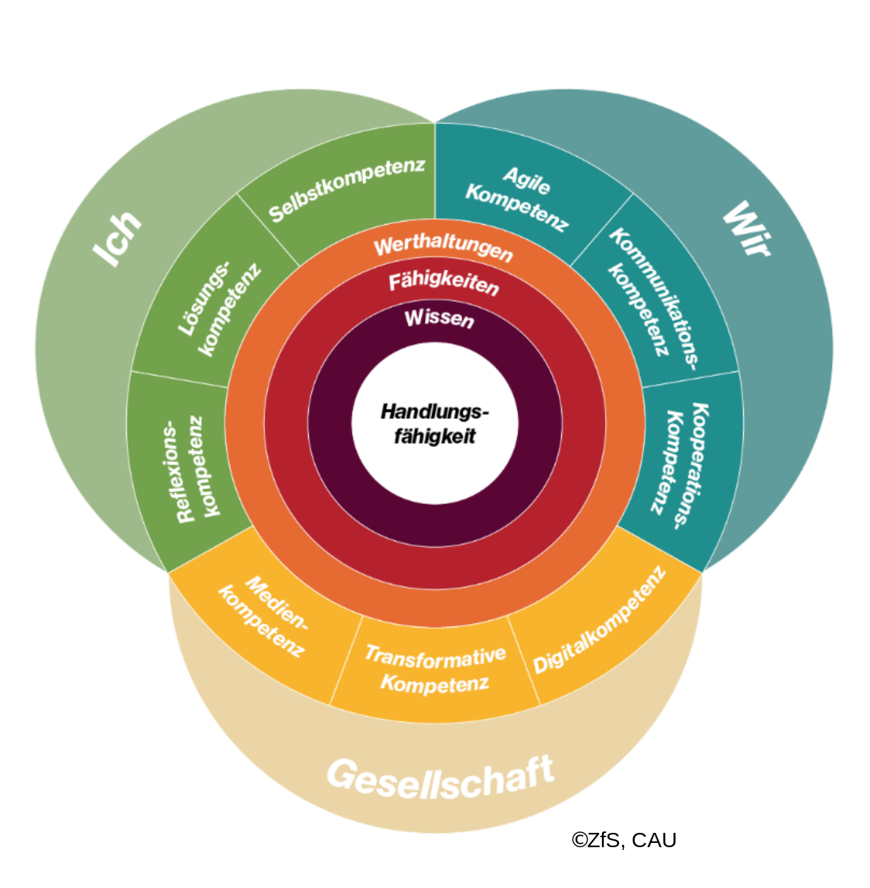
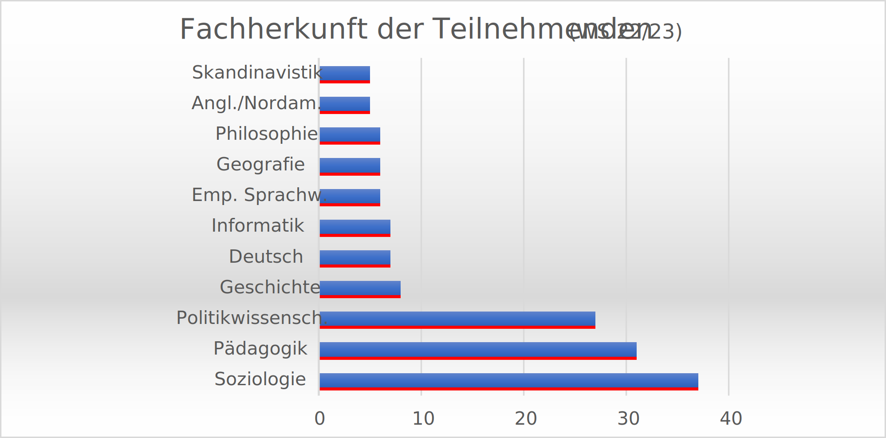
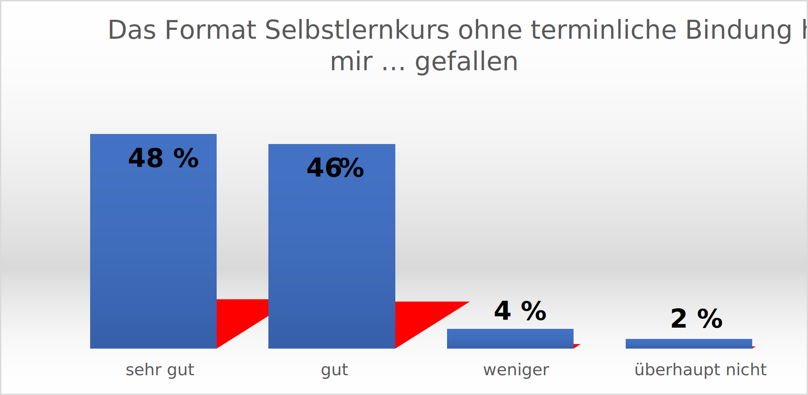
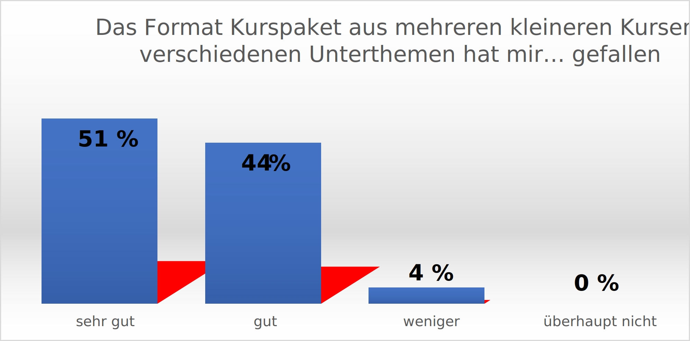
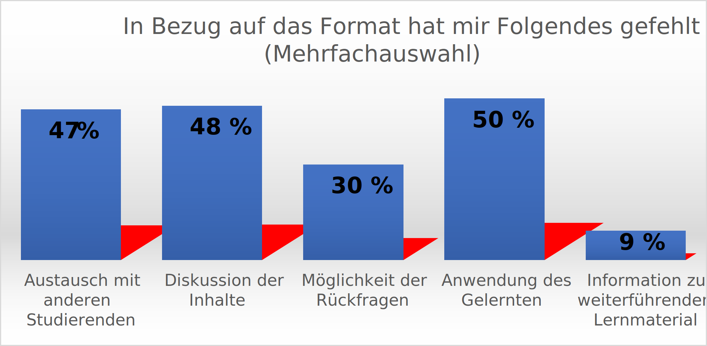
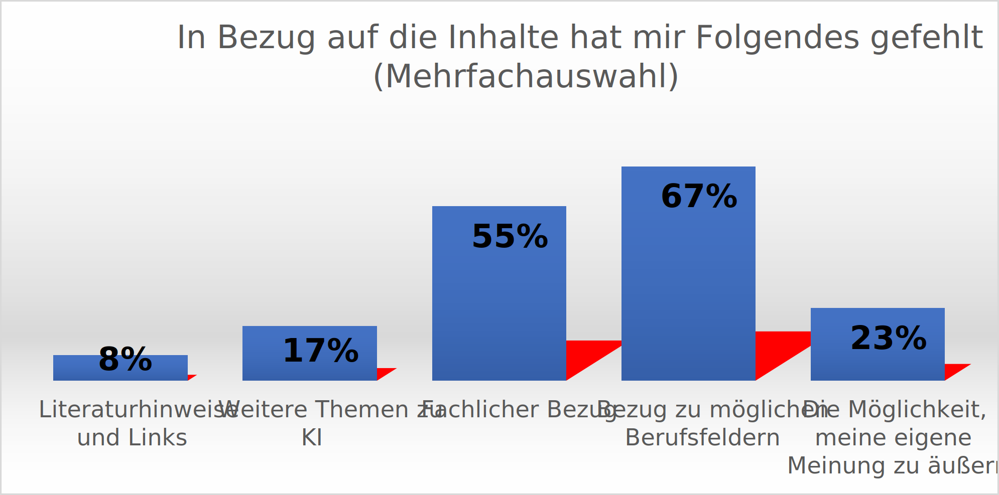
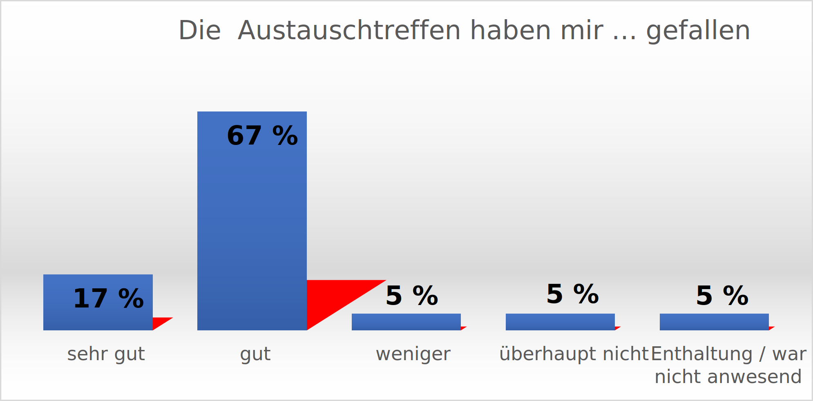

Data-Literacy-Sensibilisierung
Eine Einführung in das Schlüsselthema künstliche Intelligenz
Toolbeschreibung
Um für Studierende der Christian-Albrechts-Universität zu Kiel (CAU) im fachübergreifenden Wahlangebot ein Lernangebot zu schaffen, das sie für die KI und ihre Chancen und Risiken sensibilisiert, wurde im Sommersemester 2020 eine asynchrone Lehrveranstaltung entwickelt. Dafür arbeitete das Zentrum für Schlüsselqualifikationen (ZfS) der CAU mit der Technischen Hochschule Lübeck zusammen und konzipierte auf der bestehenden landesweiten Lernplattform futureskills-sh.de einen digitalen Selbstlernkurs. Bei diesem Lernangebot handelt es sich um ein Kurspaket aus 14 Einzelkursen, die jeweils in sich abgeschlossen ein eigenes Thema behandeln und einen Arbeitsumfang von 3 bis 30 Stunden haben. Die Einzelkurse sind jeweils von anderen Lehrenden hergestellt und als Open Educational Ressources (OER) auf der Lernplattform oncampus der TH Lübeck verfügbar gemacht worden. Die Lerninhalte sollten Studierende ohne fachlichen Hintergrund mit Themen der digitalen Gesellschaft, des digitalen Arbeitens und vor allem mit wichtigen Fragen zur Nutzung künstlicher Intelligenz sensibilisierend in Kontakt bringen.
Zur Bereitstellung des Kurspakets wurde der fachübergreifende Katalog offener Lernangebote am ZfS genutzt. Hier finden sich über 300 Module, die neben ergänzenden Fachkompetenzen insbesondere die individuellen Schlüsselkompetenzen fördern. Das Angebot an Schlüsselkompetenzen basiert auf einem Framework, der im ZfS 2022 entwickelt wurde (Abbildung 1). Dieser lehnt sich an das Framework vom Stifterverband und von McKinsey (Suessenbach & al., 2021) an und greift die Future Skills von Ulf-Daniel Ehlers auf (Ehlers, 2021), enthält jedoch einige hochschulspezifischere Anpassungen und bezieht das KSAVE-Konzept der 21st Century Skills ein (Binkley & al., 2012).

Vor allem die Digital- und Medienkompetenzen werden im ZfS-Kompetenzrahmen stärker betont. Dafür sollte gezielt ein zusätzliches Angebot an Lehrveranstaltungen bereitgestellt werden.
Insbesondere war es der Ansatz, ein stark selbstgesteuertes Lernangebot im digitalen Raum zu bieten, das die Realität des digitalen Lernens und Arbeitens dauerhaft in den Studienalltag integriert (Matthes, o. J.).
Mit dem Schwerpunkt KI wurden entsprechende Learning Nuggets ausgewählt. Insgesamt ist ein Lernangebot entstanden, das 75 Zeitstunden Workload umfasst und über das Vorlesungsverzeichnis allen Studierenden zugänglich ist. Je nach Studiengang können sich die Studierenden bei bestandener Leistung 2,5 ECTS anrechnen lassen. Die Leistung ist unbenotet. Die enthaltenen Lernstandsüberprüfungen (Multiple-Choice-Wissenstests, Lückentexte, Zuordnungsaufgaben etc.) werden automatisiert überprüft. Die Lernenden erhalten unmittelbar Feedback zu ihrer Leistung (Take-Home-Prüfung). Am Ende jedes Einzelkurses erhalten die Studierenden ein Zertifikat. Sobald sie alle Learning Nuggets mit Zertifikat abgeschlossen haben, wird das Gesamtzertifikat „Future Skills – KI“ automatisiert ausgegeben.
Betreut und gerahmt wird das Angebot durch eine Lehrkraft im ZfS. Sie organisiert die Anmeldung und führt zu Beginn der Vorlesungszeit eine Kick-off-Veranstaltung durch. In der als Videokonferenz gestalteten Veranstaltung wird das Kennenlernen der Studierenden untereinander gefördert, die Fähigkeit zum selbstorganisierten Studium adressiert und zur Bildung von Lerngruppen angeregt. Der Lernpfad wird im Anschluss individuell durch die Studierenden gesteuert. Zusätzlich wird seit dem Sommersemester 2021 eine Live-Diskussionsreihe von drei bis vier Sitzungen (je eine Stunde) durchgeführt. Die Sitzungen dienen dazu, den Studierenden den Kontakt zu Unternehmen oder Institutionen zu ermöglichen, die mit künstlicher Intelligenz arbeiten, den Austausch untereinander anzuregen, das Gelernte mit der Realität dieser Praxisbeispiele abzugleichen, Fragen zu stellen und in Diskussion zu treten. Dazu stellen die Gäste aus der Praxis eine praktische Aufgabe. So entstand zum Beispiel ein erster Entwicklungsschritt für einen Chatbot.
Voraussetzungen & Zielgruppen
Die Teilnehmenden stammen aus verschiedensten Fächern, Studiengängen und Studienstufen der CAU. Es handelt sich jedoch für alle Teilnehmenden um einen Wahlpflichtkurs, sodass von einem großen intrinsisch motivierten themenbezogenen Interesse ausgegangen werden kann. Darüber hinaus könnte auch das besondere Format eine Rolle spielen. An der CAU existieren kaum reine Selbstlernangebote dieser Art. Die Teilnahme wird zahlenmäßig nicht begrenzt. Im Wintersemester 2022/2023 meldeten sich 100 Studierende an, die zum überwiegenden Teil auch die Prüfungsleistung abschließen und bestehen. Seit 2020 haben den Kurs 234 Studierende erfolgreich abgeschlossen.
Kompetenzen
Inhaltlich bietet der Kurs voraussetzungslos einen Einstieg in die algorithmische Datenanlyse und rahmt dieses Thema durch Anwendungsbezüge in Geschäftsfeldentwicklung, Personal und Organisation und setzt auch allgemeine flankierende Themen. Nach Abschluss aller 14 Learning Nuggets sind die Teilnehmenden in der Lage,
- sich ein Urteil zu Themen und Thesen aus der Diskussion um die digitale Transformation im Hinblick auf Arbeitskultur, Arbeitsorganisation, Bildung, Mensch-Maschine-Interaktion und Big Data zu bilden,
- die Bedeutung von KI zu erkennen, Grundprinzipien von KI zu verstehen und wichtige Begriffe, Konzepte und Anwendungsmöglichkeiten im KI-Kontext zu erläutern,
- zu verstehen, was Digitalkompetenzen sind und warum sie wichtig sind,
- zu erkennen, was KI-Lösungen für ein Unternehmen leisten können, und
- grundlegende ethische und soziale Herausforderungen von KI sowie Fragen des Datenschutzes zu erläutern.
Lerninhalte & Methoden
Die Learning Nuggets
KI – einfach erklärt Ein kurzer Einstieg in das Thema künstliche Intelligenz. Es werden die Begriffe „Machine Learning“ und „Deep Learning“ erläutert und verschiedene Lerntechniken für künstliche neuronale Netze erklärt.
KI – Ethik
In diesem Kurs geht es um die grundlegenden ethischen und sozialen Herausforderungen, die sich bei der Verwendung von KI-Methoden stellen. Es werden Beispiele angeführt, aber auch Methoden, wie mit diesen Herausforderungen verantwortungsvoll umgegangen werden kann.
Neuronale Netze – Konzeption und Nutzung
Der Kurs vermittelt ein grundlegendes Verständnis über neuronale Netze und ihre Wirkungsweise, Vor- und Nachteile und welche Arten von neuronalen Netzen zu welchem Zweck sinnvoll sind.
KI – der Weg zur Anwendung
In diesem Kurs werden Technologien, Methoden und Konzepte künstlicher Intelligenz erläutert und es wird anhand von praxisnahen Beispielen geklärt, welche Werkzeuge für definierte Anwendungsfälle geeignet sind.
KI-basierte Geschäftsmodelle
Ein anspruchsvolles und innovatives Wertangebot, dessen Kernfunktionalität auf künstlicher Intelligenz beruht, wird im Optimalfall durch ein innovatives Geschäftsmodell am Markt platziert. Dieser Kurs erläutert den Weg dorthin. Im ersten Teil werden Zweck und Bestandteile eines Geschäftsmodells erklärt. Teil 2 behandelt Geschäftsmodellinnovationen und vertikale KI-basierte Geschäftsmodelle.
KI und die DSGVO
Künstliche Intelligenz benötigt Daten. Dieser Kurs bietet Kenntnisse über den Datenschutz und die Richtlinien der DSGVO.
KI-Kompetenzentwicklung
Kursinhalt sind die Zusammenhänge zwischen der Einführung von KI und den sich daraus ergebenden Änderungen für die Organisation und die Mitarbeiter:innen.
Mensch und KI
Die Möglichkeiten der KI fordern dazu auf, „Arbeit“ grundlegend neu zu denken. Mit dem Menschen im Mittelpunkt zeigt dieser Kurs, wo die Stärken und Schwächen von KI-Lösungen in konkret untersuchten Use-Cases liegen und wie sich KI-Lösungen erfolgreich in Unternehmen integrieren lassen.
Infrastruktur und Basistechnologie für Big Data
Datenmassen sind komplex zu verarbeiten. Der Kurs erklärt, warum klassische (relationale) Datenbanken als ungeeignet und unwirtschaftlich gelten und Basistechnologien wie Hadoop, HBase, Spark oder MongoDB die Verarbeitung und Vorhaltung riesiger Datenmengen bereitstellen können.
Personalstrategie für KI
Der Kurs zeigt, wie eine zielgerichtete Personalstrategie, integrierte Prozesse und eine digitalisierte HR-Umgebung die gesamte digitale Transformation und den Einsatz von KI im Unternehmen unterstützen können.
KI in der Bildverarbeitung
In diesem Kurs wird erläutert, wie künstliche Intelligenz in der Verarbeitung und Analyse von Bilddaten eingesetzt werden kann und warum die Verfahren gerade in diesem Fachbereich so herausragende Ergebnisse liefern.
Persuasive Design (Medienkompetenz)
In diesem Kurs wird gezeigt, wie durch das Design interaktiver Systeme und (digitaler) Medien Nutzer:innen in ihren Entscheidungen und ihrer Wahrnehmung beeinflusst oder gar manipuliert werden können. Es wird erklärt, wie diese Beeinflussung funktioniert und auf welchen psychologischen Aspekten sie beruht und wie man dies bei der Mediennutzung kritisch reflektieren kann.
New Work und Future Skills
Unsichtbare Datenhighways und riesige Rechenzentren beschleunigen die Veränderungen in der Industrie- und Arbeitswelt in disruptiven Ausmaßen. Die Art und Weise, wie Arbeit gedacht, bewertet, ermöglicht und praktiziert wird, wird sich stark verändern. Der Kurs diskutiert Chancen und Perspektiven dieser Transformation.
Erkenntnisse & Erfahrungen
Seit dem Sommersemester 2020 werden die Teilnehmenden jedes Durchgangs zum Kurskonzept befragt. Die Befragten stammen in überwiegender Mehrheit aus sozialwissenschaftlichen Fächern. Die folgende Übersicht zeigt einen Auszug der Herkunftsfächer aus dem Wintersemester 2022/2023.

Die Auswertung der Befragung mit bisher 90 Fragebögen zeigt, dass die Studierenden das Format als Selbstlernkurs mit einem Höchstmaß an Selbstorganisation gut bis sehr gut annehmen.

Auch die Sammlung kuratierter OER-Materialien trifft den Geschmack der Studierenden. Sie melden zurück, dass sie die kurzen, in sich inhaltlich geschlossenen Lerneinheiten als abwechslungsreich empfinden und auch die Ansprache durch verschiedene Lehrende als Bereicherung sehen.

Dennoch wird deutlich, dass das Format auch Defizite mit sich bringt: Insbesondere die Anwendung des Gelernten fehlt den Studierenden. Es scheint, dass die Studierenden den direkten Bezug der Inhalte mit ihren Fächern erwarten.
Fast ebenso deutlich melden die Studierenden zurück, dass ihnen der Austausch und die Diskussion der Inhalte fehlt. Speziell für dieses Bedürfnis wurden die Live-Treffen eingerichtet. Leider beteiligen sich die Studierenden trotz des sehr hohen Interaktionsgrades des Formats nur sehr wenig an der angebotenen Diskussion.

Die Interpretation, dass mit dem fehlenden Anwendungsbezug die individuell fachliche Anwendung gemeint sein könnte, wird auch durch die Antwort auf die Frage nach den inhaltlichen Wünschen der Studierenden gestützt. Größte inhaltliche Lücke scheint jedoch der fehlende Bezug zu möglichen Berufsfeldern zu sein. Hierzu ist zu beachten, dass das Modul „Future Skills – KI“ als Bestandteil des Pflicht-Praxismoduls für die Zwei-Fächer-Bachelor-Studiengänge der CAU nutzbar ist. Dieser Studiengang stellt zugleich die Hauptnutzendengruppe im Kurs. Es besteht daher die nachvollziehbare Erwartung, dass ein direkter beruflicher Bezug hergestellt wird. Diesem Bedürfnis sollte ebenfalls mit den Live-Treffen und durch die eingeladenen Unternehmen begegnet werden. Sie werden insbesondere danach ausgewählt, dass sie typische Berufsfelder wie Bildung, Kultur, Medien oder Marketing abdecken. Berufsfelder, in denen traditionell viele Studierende auch ihr Praktikum absolvieren beziehungsweise in die sie nach dem Abschluss streben.

Dennoch zeigen die Antworten auf die direkte Frage nach den Live-Austauschtreffen, dass die Studierenden diese Art Ergänzung der Selbstlernkurse honorieren.

Insgesamt lassen sich die Gelingensbedingungen dieses Kurses in seiner Art in fünf Punkte zusammenfassen. Zunächst ist es wichtig, dass das Angebot ein Wahlangebot darstellt, weil Abbruchquoten (WS 2022/2023: 28 Prozent ) %) eventuell auch darauf zurückzuführen sind, dass Teilnehmende das Format nicht als geeignet betrachten. Als weitere wichtige Bedingung des Gelingens kann das gezielte Onboarding erachtet werden. Die Auswahl der Lernmaterialien spielt eine weitere wichtige Rolle. Es sollte sich um motivierendes und aktivierendes Material handeln. Die Möglichkeit der schnellen Kontaktaufnahme zur Lehrkraft stellt insbesondere bei technischen Problemen eine wichtige Bedingung dar. Auch der Praxisbezug und das Anregen einer kritischen Haltung zu den Chancen und Herausforderungen der künstlichen Intelligenz über Diskussionsformate sind weitere wichtige Gelingensbedingungen.
Als Herausforderung hat sich insbesondere die Heterogenität der Lerngruppe gezeigt. Der Bezug zu konkreten Berufsfeldern und der Fachbezug können entgegen den Erwartungen der Studierenden nicht ausreichend hergestellt werden. Hier müssten fachbezogene Lernangebote anknüpfend bereitgestellt werden. Die Prüfungsleistung für das Modul besteht im Abschluss aller Learning Nuggets. Die enthaltenen Prüfungselemente werden automatisiert ausgewertet. Eine zusätzliche Prüfung erfolgt nicht. Dies könnte prüfungsrechtlich bedenklich sein.
Autorinnenprofil
Wibke Matthes (Diplom Politologin und Betriebswirtin) Geschäftsführende Mitarbeiterin, Direktorin und Leiterin des Bereichs Schlüsselkompetenzen sowie Leitung der Fachergänzung am Zentrum für Schlüsselqualifikationen (ZfS) der Christian-Albrechts-Universität zu Kiel; Lehre für Entrepreneurship als Schlüsselkompetenz.
2015 Veröffentlichung des Buches „Schlüsselkompetenzen im Hochschulstudium“ zusammen mit weiteren Autor:innen
2017 LehrehochN-Fellow, 2022 Sprecherin des Fachausschusses Future Skills in der Gesellschaft für Schlüsselkompetenzen, 2022 Civic Innovation Award des BMAS für die Entwicklung des „Kompetenzboosters“, eines KI-gestützten Instruments zur individuellen Messung und zum bedürfnisorientierten Training von Future Skills für Studierende, gemeinsam mit dem CAU-Start-up DayOff.